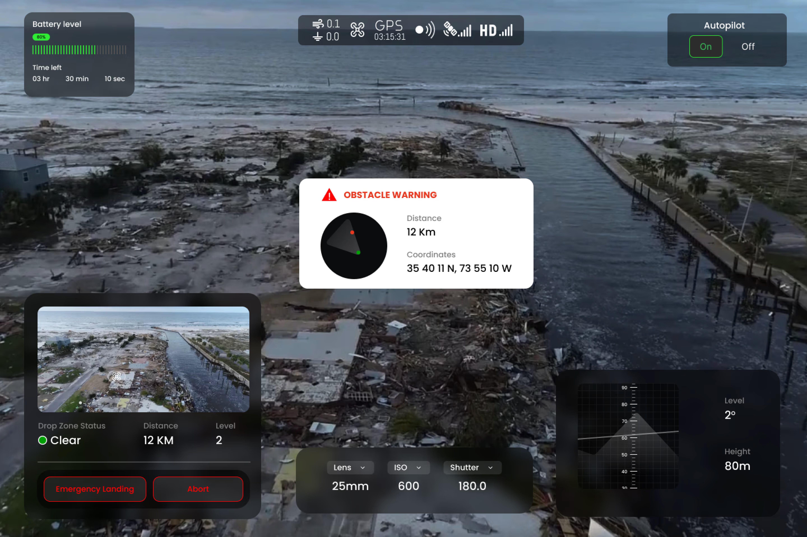
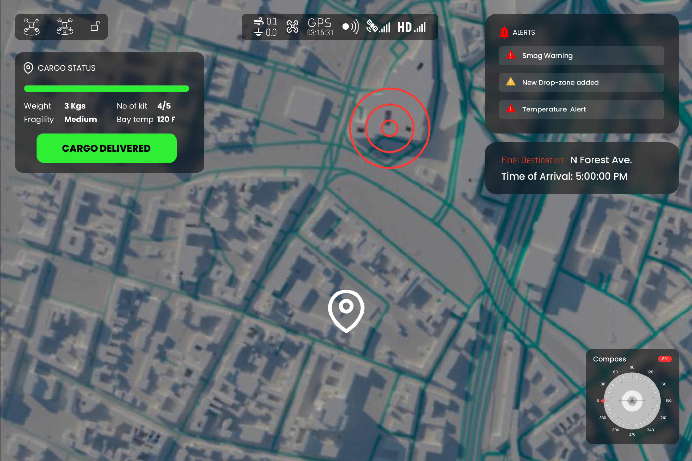

Operator display & alert design
Visual Display — Cargo Status
To visually confirm that the package has been successfully dispatched from the UAV. A green checkmark icon appears on the display, accompanied by a confirmation message stating “Package Dispatched” along with a timestamp. Yellow colour displays cargo delivery in process.

Cargo status display — dispatched confirmation
Auditory Alerts
Collision Warning
Notifies when the UAV is at imminent risk of colliding with the ground or an obstacle. A distinct, abrupt sound conveys urgency — adhering to key principles of attention, perception, and memory to enhance safety during operations.
Low Battery Warning
Provides regular updates on the UAV's battery level. A recurring low-frequency tone accompanied by a verbal announcement of battery percentage (e.g., “Battery at 30%”). Design follows key principles of attention and perception.
Situational Awareness
All operator displays have mechanisms to increase situational awareness through integrated chat functionality, enabling operators to communicate in real-time during missions.

Pilot view

Navigator view
Mission Initiation Alert
Designed to efficiently deliver critical supplies to disaster-affected regions. A concise, attention-grabbing tone followed by a robotic voice stating “Package dispatched from UAV” provides clear auditory feedback.
Autopilot Alert
Notifies the operator when the autopilot system is activated or deactivated. A blinking red indicator light signals the change, supplemented by a dynamic label — AUTOPILOT ON (green) and AUTOPILOT OFF (red).

Autopilot status indicator